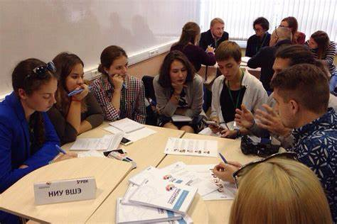

Добро пожаловать в ВШЭ
Высшая Школа Экономики (ВШЭ) является одним из ведущих университетов России, предлагающим образование мирового уровня. Наши программы направлены на подготовку специалистов высокого уровня в различных областях знаний.
История и Миссия
ВШЭ была основана в 1992 году с целью реформирования высшего образования в России. Наша миссия — создавать, распространять и сохранять знания, способствовать развитию общества путем подготовки высококвалифицированных специалистов.
Здание ВШЭ
К началу страницыПрограммы Обучения
ВШЭ предлагает разнообразные образовательные программы, включающие бакалавриат, магистратуру и аспирантуру по таким направлениям, как экономика, управление, социология, право, и многие другие.
Студенты ВШЭ
К началу страницыНаучные Исследования
ВШЭ активно занимается научными исследованиями, сотрудничая с ведущими университетами и исследовательскими центрами по всему миру. Наши ученые публикуют свои работы в престижных международных журналах и участвуют в крупных научных конференциях.
Научные исследования в ВШЭ
К началу страницыСтуденческая Жизнь
ВШЭ предлагает своим студентам насыщенную внеклассную жизнь: студенческие клубы, спортивные секции, культурные мероприятия и многое другое. Мы стремимся создать благоприятную и стимулирующую среду для личностного и профессионального развития наших студентов.
Студенческая жизнь в ВШЭ
К началу страницы